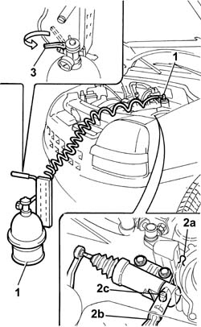
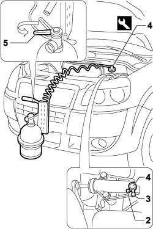

0010T67 hydraulic clutch system bleed air
- Path
- Procedures > 00 MAINTENANCE > 0010 NEW VEHICLES AND MAINTENANCE > 0010T VEHICLE FLUIDS > 0010T67 hydraulic clutch system bleed air
- Kind
- repair procedure (removal / refitting; the operation number is the code)
- Applies to
- engines: 1.4 8v, 1.6 16v, 1.9 DIESEL; all production periods
- Interactive page
- https://sloeber94.github.io/elrnDB-fDbl/en/#/2584131
Applies to: engines: 1.6 16v; all production periods
Check that the brake/clutch fluid in the reservoir is at the maximum level; if this is not the case, top up using the recommended fluid.
When topping up the brake/clutch fluid, remove the reservoir cap and top up until the maximum level is reached.
Type | Component | Description | Qty. | |
|---|---|---|---|---|
- | Synthetic fluid | BRAKE FLUID | TUTELA TOP 4 | - |
The symbol on the container identifies synthetic type brake/clutch fluids, distinguishing them from mineral type fluids. The use of mineral type fluids irreparably damages the special rubber seals in the hydraulic brake/clutch system.
Position the vehicle on a lift.
Op. 5530B52 BATTERY SUPPORT/DRIP TRAY - R.R.
Check that the brake/clutch fluid is between the MIN and MAX levels.
1. Remove the brake/clutch fluid reservoir cap and connect the equipment to the reservoir.
Description | Code | |
|---|---|---|
1 | Device | 1.806.097.000 |
2. Lift up the spring (2a) and move the oil pipe (2b) back until the first click in order to open the bleed valve incorporated in the actuator, then connect the recovery device (pipe and reservoir) to the bleed valve on the actuator (2c).
3. Open the fluid reservoir tap slowly.
Wait for all the air in the hydraulic system to escape.
Push the fluid pipe towards the actuator and lock it in position using the retaining spring.

Applies to: engines: 1.9 DIESEL; all production periods
Check that the brake/clutch fluid in the reservoir is at the maximum level; if this is not the case, top up using the recommended fluid.
When topping up the brake/clutch fluid, remove the reservoir cap and top up until the maximum level is reached.
Type | Component | Description | Qty. | |
|---|---|---|---|---|
- | Synthetic fluid | ORDINARY PREPARATION | TUTELA TOP 4 | - |
The symbol on the container identifies synthetic type brake/clutch fluids, distinguishing them from mineral type fluids. The use of mineral type fluids irreparably damages the special rubber seals in the hydraulic brake/clutch system.
Position the vehicle on a lift.
Op. 5530B52 BATTERY SUPPORT/DRIP TRAY - R.R.
Check that the brake/clutch fluid is between the MIN and MAX levels.
1. Remove the brake/clutch fluid reservoir cap and connect the equipment to the reservoir.
Description | Code | |
|---|---|---|
1 | Device | 1.806.097.000 |
2. Lift up the spring (2a) and move the oil pipe (2b) back until the first click in order to open the bleed valve incorporated in the actuator, then connect the recovery device (pipe and reservoir) to the bleed valve on the actuator (2c).
3. Open the fluid reservoir tap slowly.
Wait for all the air in the hydraulic system to escape.
Push the fluid pipe towards the actuator and lock it in position using the retaining spring.
Applies to: engines: 1.4 8v; production: da 12/03; only with equipment: MY 2005
Position the vehicle on a lift.
Check that the brake/clutch fluid in the reservoir is at the maximum level; if this is not the case, top up using the recommended fluid.
Type | Component | Description | Qty. | |
|---|---|---|---|---|
- | Synthetic fluid (kg) | BRAKE-CLUTCH HYDRAULIC SYSTEM | TUTELA TOP 4 | 0.55 |
The symbol on the container identifies synthetic type brake/clutch fluids, distinguishing them from mineral type fluids. The use of mineral type fluids irreparably damages the special rubber seals in the hydraulic brake circuit.
Op. 5530B52 BATTERY SUPPORT/DRIP TRAY - R.R.
1. Cnnect the tool to the brake/clutch fluid reservoir.
Description | Code | |
|---|---|---|
1 | Device | 1.806.097.000 |
2. Remove the cap from the bleed valve.
3. Connect the recovery device (pipe and reservoir) to the bleed valve on the clutch slave cylinder.
4. Tighten the bleed screw.
5. Open the fluid reservoir tap slowly.
Wait for all the air in the system to escape.
Tighten the bleed screw.
Remove the fluid recovery device.
Place the cap in its housing on the bleed valve.
Remove the equipment.
Description | Code | |
|---|---|---|
- | Device | 1.806.097.000 |

Applies to: engines: 1.4 8v; production: da 12/03; only with equipment: MY 2005
Op. 5530B52 BATTERY SUPPORT/DRIP TRAY - R.R.
Remove the vehicle from the lift.
Check that the cluch disengages and that the gears engage properly.
Topics linked from this page (2)
Topics that link to this page (9)
- E01 CLUTCH NOT RELEASING CORRECTLY
- 1004B10 POWER UNIT WITH MANUAL GEARBOX - R.R
- 1004B12 power unit with manual gearbox - r+r for versions with a/c
- 1820B20 (Pump) - MASTER CYLINDER R.R.
- 1820B21 (Pump) - MASTER CYLINER R.R. for right hand drive versions
- 1820B30 OPERATING CYLINDER/CLUTCH HYDRAULIC ACTUATOR - R.R.
- 1820B40 FLEXIBLE PIPE from clutch reservoir to (pump) - master cylinder R.R.
- 1820B41 hose from clutch reservoir to master cylinder (pump) - r r for rh drive versions
- 1820B48 FLEXIBLE supply PIPE to operating cylinder -R.R.